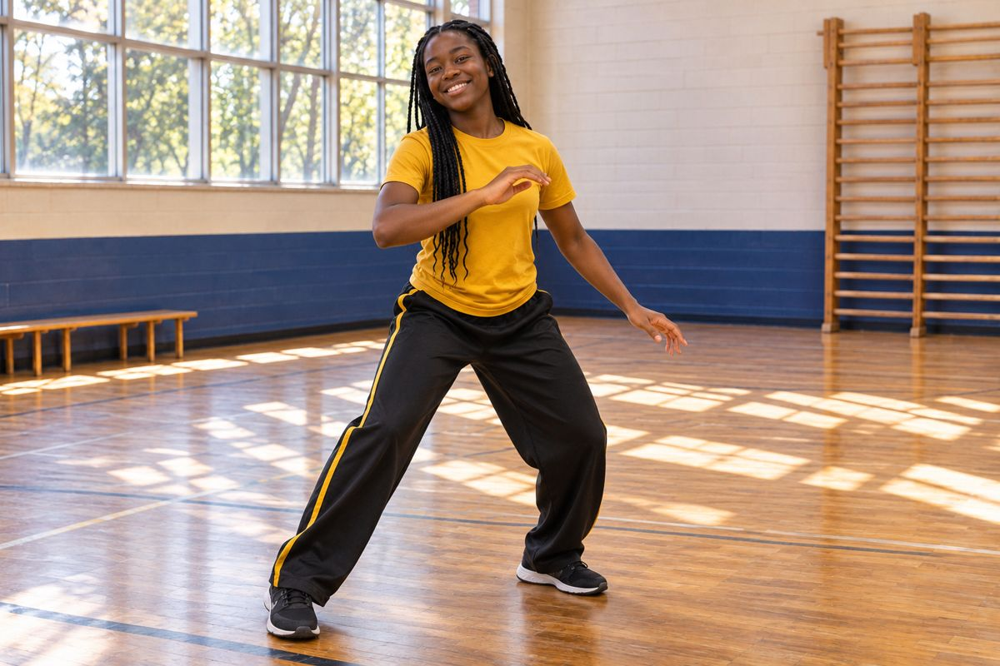

Website Information
Privacy Notice
This notice explains how information sent through the developing Aberewa Middle School website may be handled.
Information you choose to send
When you use the clarification form, Firebase Authentication manages your account sign-in. We store your account identifier, account email, name, request category, subject, optional page address, message, submission time, and the school’s reply in Firebase Firestore. You can read your own requests and replies after signing in. The authorized school administrator can review and answer requests. Requests and replies are not published to other visitors. This account does not enroll you in the school or grant classroom access.
Do not send confidential student records
Do not submit IEPs, evaluations, medical records, Social Security numbers, full birth dates, or other sensitive student information through a general inquiry. If secure records are needed in the future, instructions for an approved secure process will be provided.
Website measurement
The public visit counter has been removed. If privacy-conscious analytics are added later, this notice will be updated to explain what is collected and why.
Email notifications
After a request is saved, the website asks FormSubmit to send the school a generic notification with a dashboard link. Your name, account email, subject, and message are not included in that notification. FormSubmit receives the network request and may process technical information such as your IP address under its privacy policy. Email alerts are best effort; the private website inbox is the record of your request.
External services
Links to payment, media, social, or other third-party services are governed by those services' own privacy practices.
Questions
Last updated: November 13, 2026.

Movement · Music · Community
Capoeira Angola at Aberewa
Capoeira participation, support needs, photographs, and recordings belong within the school’s privacy and consent procedures. A cultural activity does not remove a student’s need for privacy or an alternative to being photographed.
Our schoolwide approach is inspired by Mestre Curtis Pierre’s work in New Orleans, with attention to fluid movement, balance, flexibility, music, and cultural history.